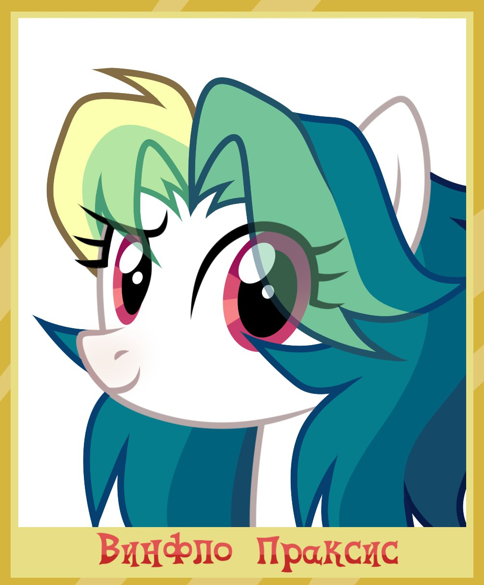
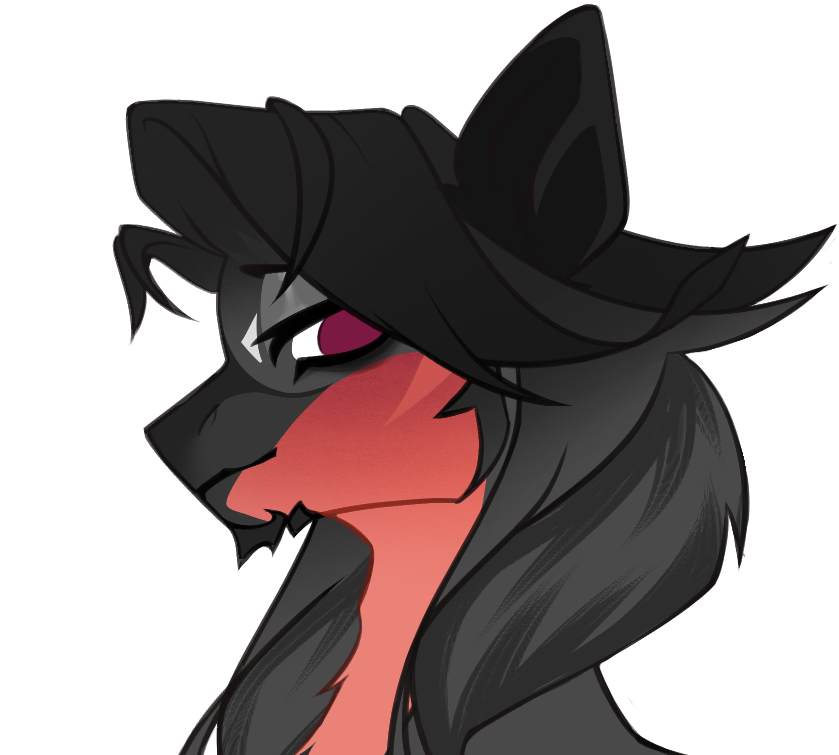
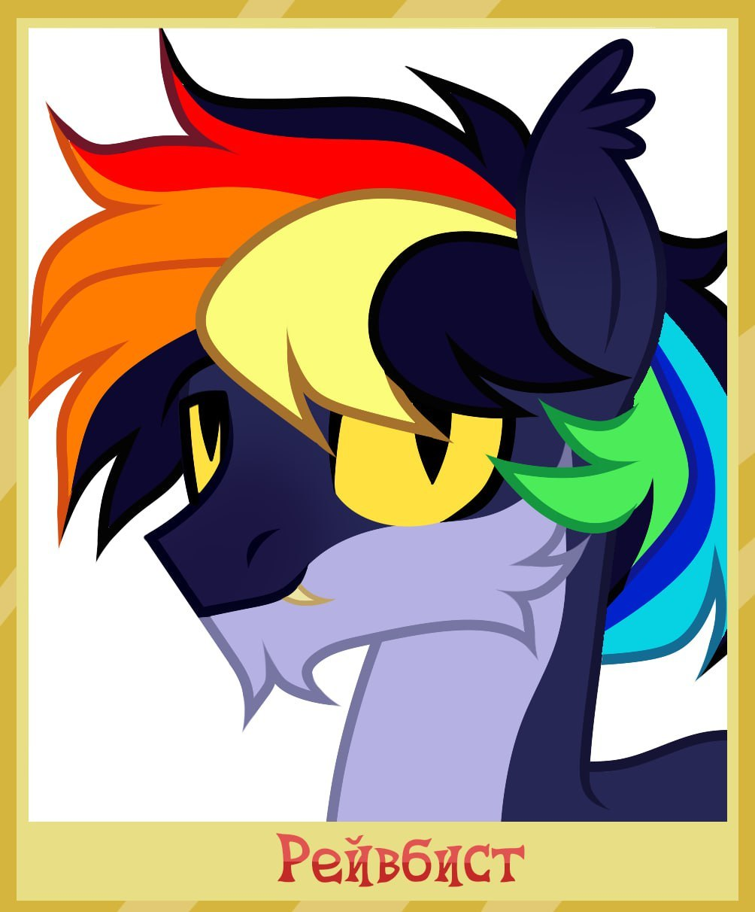
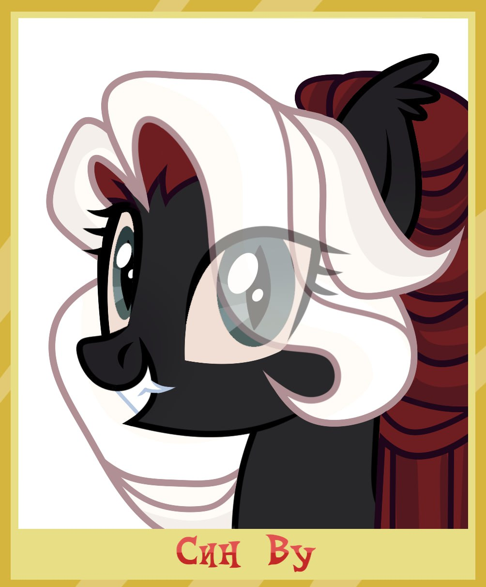
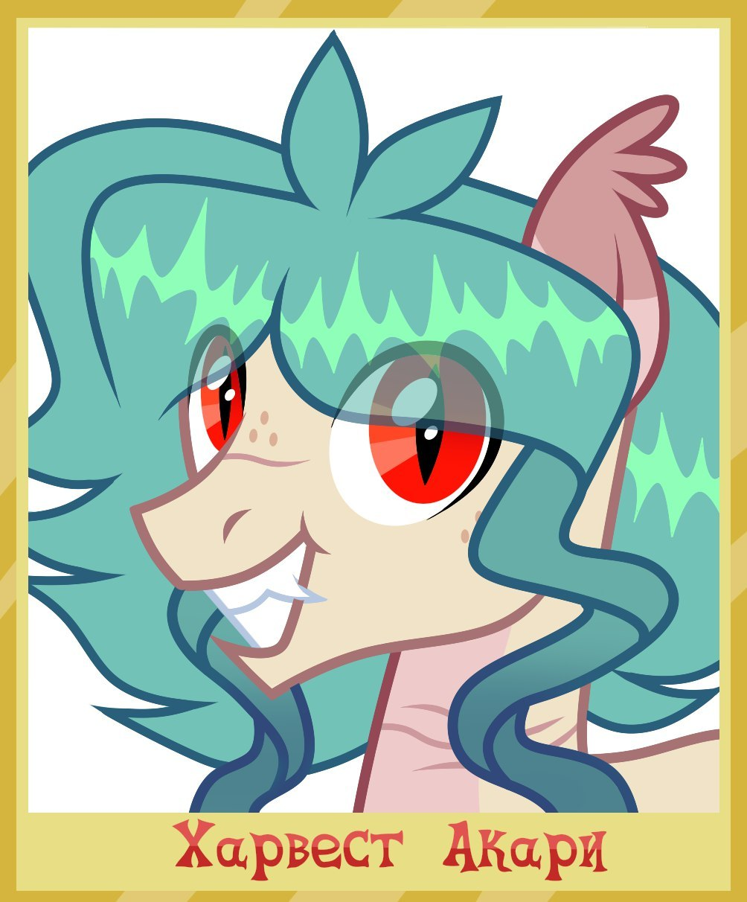
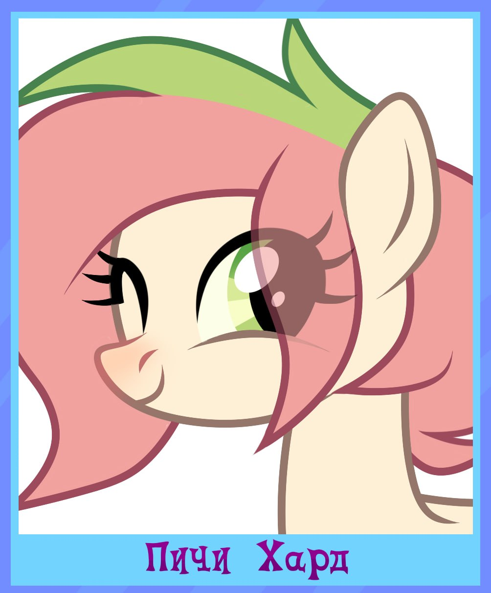
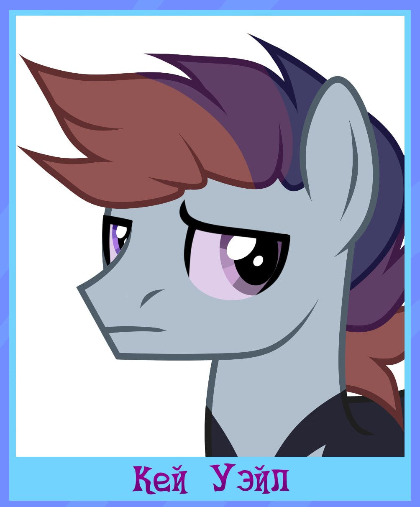
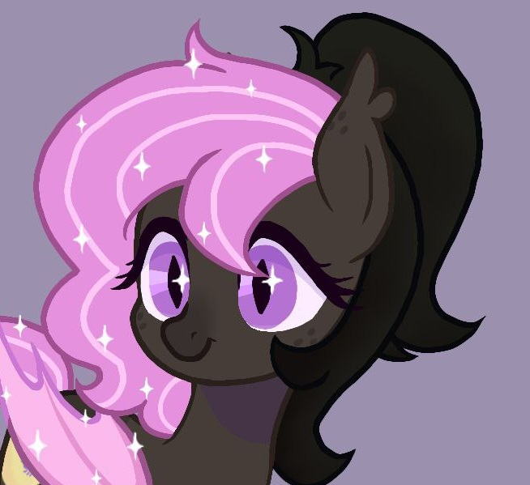
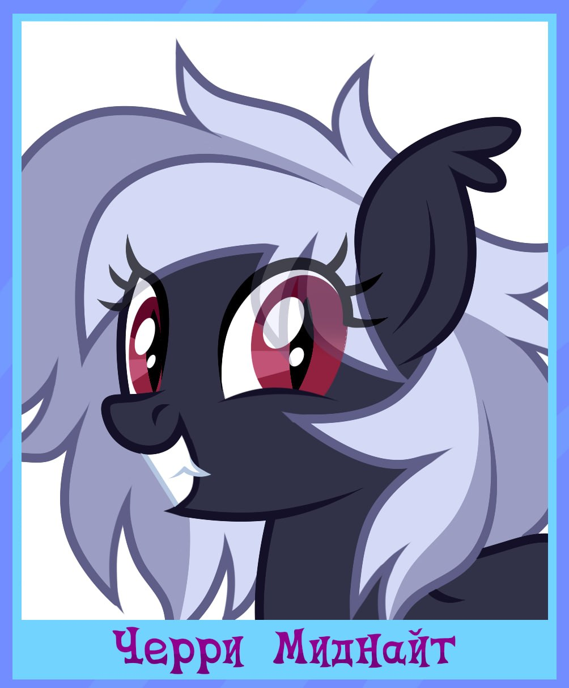

АДМИНИСТРАЦИЯ
Команда управления организацией «Небесный Вираж»
Администрация отвечает за развитие проекта, организацию работы участников, контроль порядка и поддержку летунов.
Главнокомандующий

Винфло Праксис
Главнокомандующий
Винфло Праксис
Руководитель организации. Отвечает за развитие проекта, стратегические решения и работу всех подразделений.
Заместитель

Вивальди Близзард
Заместитель
Заместитель
Оказывает помощь руководителю в управлении проектом, координирует работу администрации и контролирует выполнение поставленных задач. Исполняет обязанности руководителя в его отсутствие.
Модерация

Рейвбист
Главный Модератор
Рейвбист
Отвечает за порядок внутри проекта, следит за соблюдением правил и помогает участникам организации.

Син Ву
Главный Наставник
Син Ву
Занимается подготовкой участников, помогает новым пилотам и отвечает за обучение.

Харвест Акари
Главный работник
Харвест Акари
Координирует работу сотрудников и помогает поддерживать внутреннюю деятельность организации.
Младшая модерация

Пичи Харт
Главный Творец
Пичи Харт
Отвечает за творческую часть проекта, идеи оформления и создание новых материалов.

Кей Уэйл
Помощник
Кей Уэйл
Помогает администрации, выполняет организационные задачи и поддерживает участников.

Фрося Мейстер
Главный мед. инспектор
Фрося Мейстер
Следит за медицинским направлением организации и отвечает за здоровье участников.

Черри
Младшая модерация
Черри
Отвечает за визуальную составляющую проекта, помогает в подготовке обновлений и занимается созданием форм для работы организации.